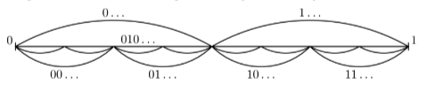

Consider infinite sequences out of 0, 1, and 2, in which no digit appears two times in a row. It is true that the cardinality of the set of such sequences is the continuum?
Firstly, the sequence may start with either 0, 1, or 2. In each option here there would be only two choices to continue building the sequence:
Therefore, we may decode the choice of the first digit with one of the following binary words: {0,1,2}↦{00,01,10}. Then, since we can't place two of the same digits in a row, we either choose the minimum remaining option (let's denote this action with 0) or the maximum remaining option (similarly, with 1):
This sequence is equipotent to {0,1}N⇒ the cardinarily of the given set is the continuum, q. e. d.
Answer: yes
Problem 2
Is the cardinality of the set of all straight lines on a plane the continuum?
Assume that the plane in this context is R2
How do we represent a straight line? A straight line can be defined by two points on a plane: A1=(x1,y1) and A2=(x2,y2). Therefore, each line is defined by 4 numbers, each of them ∈R. Thus, each line is defined by a vector a=(x1,y1,x2,y2)∈R4.
The set of all these vectors has the same cardinality as R as ∣R4∣=∣R∣. ∣R∣ has the cardinality of the continuum ⇒ the given set has the cardinality of the continuum, q. e. d.
Answer: yes
Problem 3
Is the cardinarity of the set of all total functions from R↦R the continuum?
Per definition, the set of all real functions from a real variable is RR.
The set of all total functions from R↦R is a part of the set of all subsequences from R2: P(R2)⇒{f∣f:R↦R}⊆P(R2) .
The cardinalities of R and R2 are the same. Therefore, ∣P(R2)∣=∣P(R)∣. The set of all functions from R to itself (RR) would have such a cardinality that
∣RR∣≤∣P(R2)∣=∣P(R)∣
We can create a bijection from P(R) to {0,1}R per the following logic described in the lecture for each value in the function:

Therefore, ∣P(R)∣=∣{0,1}R∣. Considering that ∣{0,1}R∣≤∣RR∣ and the inequation above, we get:
∣P(R)∣=∣{0,1}R∣≤∣RR∣≤∣P(R)∣∣P(R)∣≤∣RR∣≤∣P(R)∣
Awesome, therefore,
∣P(R)∣≤∣RR∣≤∣P(R)∣⇒∣P(R)∣=∣{f∣f:R↦R}∣
Since ∣P(R)∣ has the cardinality of the continuum, the required set also has the cardinality of the continuum, q. e. d.
Answer: yes
Problem 4
Is the set of all periodic functions f:Q↦Q with period T∈Q such that f(x+T)=f(x) countable?
Make a parallel with a next-to-identical task from the previous homework. Previously (for natural numbers and a natural period), the cardinality of that set was ∣P(NT)∣, where T∈N was a single natural number. Thus, the set was countable.
Now, we need to consider T∈Q, which doesn't really make sense when we try to take a Cartesian product a non-natural number of times. Previously, the cardinality of the sequence {0,1,…,T−1} was always finite. Now, since [0,T) is such that T∈Q, each such set would have an infinite and countable number of elements.
Thus, for each out of countably infinitely many elements T∈Q, we need to consider some mapping for a countably infinite number of values out of Q. Therefore,